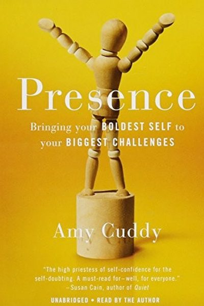

Library › Power & Strategy
Presence — Summary & Key Lessons

Bringing your boldest self to your biggest challenges — the science of feeling present and powerful.
📖 OPEN THE FULL INTERACTIVE BREAKDOWN →🌐 Read it in Hindi, Hinglish, Gujarati, Tamil & 22 more languages — free, with audio.
💡 The Big Idea
Social psychologist Amy Cuddy (of TED's 'power poses') reframes confidence: the goal isn't to fake confidence, it's to feel present — in touch with your authentic self — especially under pressure. Presence = the state of being attuned to and able to express your true thoughts, feelings and values. Her tools are body-based: posture, breathing, and 'power poses' that signal — to yourself as much as to others — that you belong. When your body feels powerful, your mind follows.
🧠 The 6 Key Lessons
Lesson 1: Presence Is the Goal, Not Confidence
What Is Presence?
Confidence is about predicting success; presence is about feeling ready to handle whatever happens — grounded in who you are. Under pressure, we lose presence: we freeze, perform, or dissociate. The goal is to stay attuned to your true self so you can express it even in the hardest moments.
📖 Example: Cuddy's research: the people who do best in high-stakes moments aren't the most confident — they're the most present. They listen, adapt, and stay connected to themselves. Cuddy's own crisis: after a severe head injury she was told she might never finish her… Read the full example →
⚡ Do this: Before your next pressure moment, ask not 'will I succeed?' but 'can I stay true to myself here?' — that's the presence question.
Lesson 2: Your Body Leads Your Mind
The Body
The body and mind are a loop: posture, breathing and muscle tension change hormones and thoughts. Expansive, open postures raise feelings of power; hunched, closed postures lower them. You can use your body to shift your state — before the interview, not during.
📖 Example: Cuddy's famous finding: two minutes of expansive posing increased testosterone and decreased cortisol, changing both feelings and performance. Athletes' victory poses — arms up, chest open — show the same loop working. Read the full example →
⚡ Do this: Before your next challenge, spend 2 minutes in an expansive pose: arms wide, chin up, shoulders back — in private.
Lesson 3: Power Poses: The How
The Body
Power poses are big, open, space-taking postures: standing tall with arms spread, leaning back with feet on the desk, hands on hips. Even 2 minutes changes your state. The key is doing them before the stressful moment — in the elevator, the bathroom, the car — not on stage.
📖 Example: Cuddy recommends a 'posture checklist' before important moments: shoulders back, head up, feet grounded, chest open. Her students reported measurable calm and confidence from the ritual. Read the full example →
⚡ Do this: Choose your 2-minute pre-moment ritual — the pose you'll strike in private before the interview, talk or meeting.
Lesson 4: The 'I Am' Self vs. the 'I Will Be' Self
The Self
We shift between the self we are now and the self we're trying to become. Authenticity — speaking from the 'I am' self — builds trust and presence. Trying to perform a future image makes us stiff and inauthentic. The power move is connecting to your core values before you enter.
📖 Example: Cuddy's studies: people who wrote about their core values before a stressful task performed better and felt more authentic — the values reminder anchored their 'I am' self. Her research distinguishes the 'I am' self — present, grounded, authentic — from the… Read the full example →
⚡ Do this: Before your next big moment, write down one core value of yours. Remind yourself you're bringing who you are, not a performance.
Lesson 5: Tiny Tweaks, Big Effects
The Small Stuff
Presence is built from small physical choices: slow your speech, take one breath before answering, make eye contact, stop fidgeting. These micro-actions compound into a state that others read as calm and credible — and that you feel as power.
📖 Example: Cuddy's data: people who paused before answering were rated as more thoughtful; those who made steady eye contact as more trustworthy. Small tweaks, outsized impressions. Two minutes of expansive posture before a difficult conversation measurably raises… Read the full example →
⚡ Do this: Pick one tiny tweak for this week: one breath before every answer, or slower speech. Practice it in every conversation.
Lesson 6: Personal Power vs. Social Power
The Meaning of Power
Cuddy distinguishes personal power (control over your own state and actions) from social power (control over others). Presence is powered by personal power — the ability to stay true to yourself regardless of the room. That's the kind of power nobody can take from you.
📖 Example: The most commanding speakers aren't the loudest — they're the most self-possessed. Their power comes from within, which is why it reads as authentic. Cuddy's distinction between personal power (over yourself) and social power (over others) — the first builds… Read the full example →
⚡ Do this: Define your own power: what do you stand for, regardless of audience? Write it in one line and reread it before hard moments.
✅ 5-Step Action Plan
- Ask the presence question before pressure moments.
- Do 2 minutes of expansive posing before big challenges.
- Create your private pre-moment posture ritual.
- Anchor on one core value before you perform.
- Practice one tiny tweak (breath, eye contact, slow speech) daily.
⚠️ When This Doesn't Work
Cuddy's 'fake it till you become it' is the most effective career advice of its decade — and Vice Media was its truest believer: a company that radiated presence, confidence and brand magnetism for thirty years, the most charismatic media empire of its generation, built on a business model that was mostly posture. It collapsed in bankruptcy because presence can open every door and still not pay the rent. Power poses build confidence, not fundamentals. Use presence to get in the room; use substance to stay there — the book underweights how many charismatics confuse the two.
💀 The Graveyard Proves It
📰 Vice Media — The $5.7B Media Rebel That Died of Believing Its Hype. Burn: $5.7B valuation → sold for $350M scraps. Read the full case study →
💬 Best Quotes from Presence
- “Don't fake it till you make it. Fake it till you become it.”
- “Presence is the state of being attuned to and able to comfortably express our true thoughts, feelings, values and potential.”
- “Our bodies change our minds, and our minds can change our behavior, and our behavior can change our outcomes.”
Interactive version: mark lessons as read, listen in your language, share quote cards.